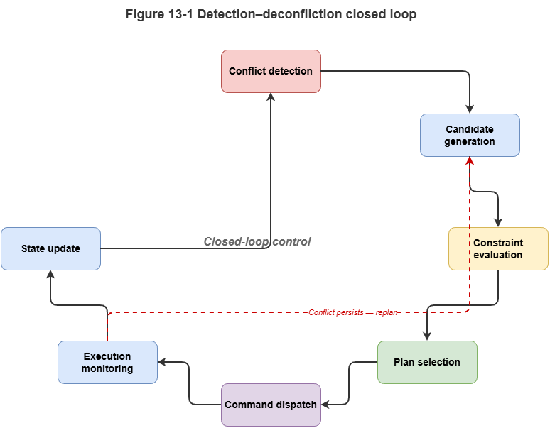
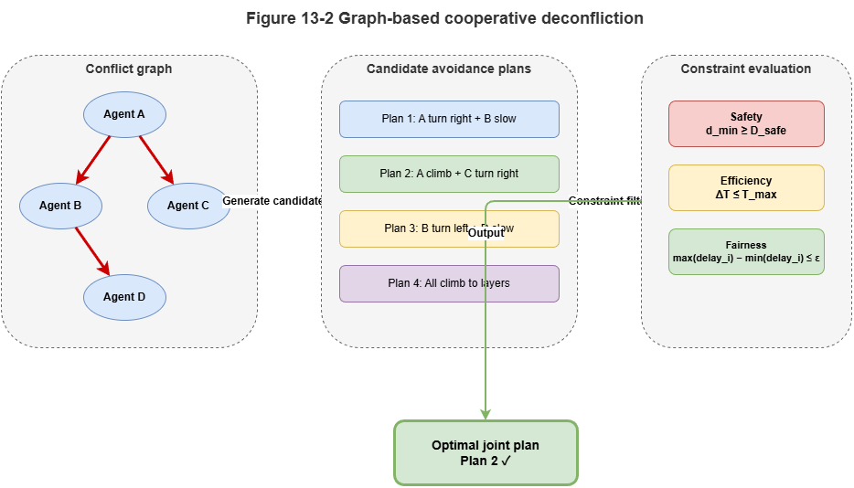
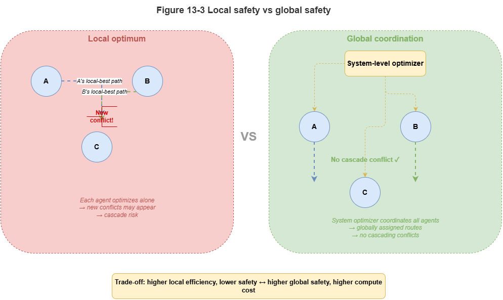

The preceding chapters established TKG modeling and graph-driven multi-agent conflict detection. For real UAM governance, detecting conflicts is incomplete. Systems must decide, after detection, how to produce executable cooperative deconfliction under graph structure, temporal relations, and operational constraints; how to avoid local fixes that cascade new risks; and how to balance real-time performance, explainability, and safety margins. Detection is the first half of dynamic risk reasoning; cooperative deconfliction and decision-making turn risk awareness into governance action.
This chapter argues temporal relational graphs support not only risk identification but joint strategy generation for multi-agent deconfliction. Deconfliction here is not single-vehicle dodge around one hazard; it is coordinated selection among candidate actions for multiple agents sharing airspace—around conflict events, priorities, spatiotemporal constraints, and interaction structure—preserving safety while sustaining throughput and mission continuity. The problem is therefore neuro-symbolic decision-making on temporal relational graphs, not only path planning or control optimization alone.
Methodologically we cover six layers: the relationship between detection and resolution; path- and graph-based maneuver generation; reinforcement learning (RL) on graph paths; constraint-grounded cooperative deconfliction; tension between local optimality and global safety envelopes; and extending SkyFlow-style models toward a general dynamic reasoning framework.
13.1 Conflict detection vs. conflict resolution#
Detection and resolution are co-discussed but differ in function, objective, and decision role. Detection answers whether latent conflict exists, with what probability, and in which spatiotemporal window—situation assessment. Resolution answers what actions to take, who yields, reroutes, holds, or replans, and whether maneuvers satisfy rules and bounds—decision-making.
They are tightly coupled: resolution without reliable detection rests on wrong or stale risk; detection outputs must be decision-ready—not only binary alarms but structured descriptors (agents involved, conflict type, time/space windows, relative priority, confidence).
Resolution shapes detector design: cooperative systems need structurally pointed risk signals—critical edges, paths, temporal intensity, priority clashes—not only scalar scores.
Conceptually, detection approximates prediction of future states; resolution controls future evolution via maneuvers—cognitive vs. interventional. Mature governance closes the loop: detect trends, act, re-detect effects, iterate.
In multi-agent settings, one resolution move rewrites the graph, changing later detections—e.g., rerouting removes one conflict but may create another; slowing reshapes corridor schedules. Detection and resolution alternate, not run once linearly.
On temporal relational graphs they are adjacent layers of one dynamic reasoner: where risk lies vs. who should do what—together spanning cognition to control.
13.2 Path- and graph-structured maneuver generation#
First resolution task: from detected risk, generate executable maneuver candidates. Unlike single-vehicle shortest-path on a static map, this searches a dynamic temporal relational graph around conflict events, interacting agents, temporal windows, and rules—constrained path search and relation reconfiguration.
Treat conflicts as local high-risk subgraphs, not isolated geometry—crossing paths, overlapping windows, priority clashes jointly. Maneuvers rewire relations: shift corridor entry times, swap nodes, reorder precedence, reassign segments—not only lateral offset.
Candidate path sets: identify key nodes, edges, and windows; for each affected agent propose alternatives—reroute, delay entry, slow, change altitude layer, switch backup corridor, local hover. As graph path substitutions, time shifts, and edge updates, maneuvers stay interpretable.
Feasibility is not pure geometry: capacity, altitude eligibility, higher-priority traffic, and temporal windows live in the graph—maneuver search must unify path connectivity with rule filtering.
Local–global coupling: local fixes can propagate—one reroute may congest downstream nodes. Candidate generation should assess multi-hop ripple via local expansion and neighborhood risk refresh.
Computationally: (1) heuristic graph search with risk weights, distance, rule penalties, priorities—interpretable and rule-friendly; (2) learned graph policies proposing actions or distributions—suited to volatile settings but needing constraint shields. Hybrids often search feasible sets, learn to rank within them.
Human–machine and regulatory interfaces: “optimal on paper” maneuvers may need approval. Systems should emit candidate sets with structural rationale and rule tags, not only a single opaque optimum—graph formulations ease audit of each option’s scope and basis.
Path- and graph-based maneuver generation elevates conflict from geometry to relation reconfiguration, actions from continuous knobs to graph edits, feasibility from distance alone to multi-constraint spatiotemporal feasibility—the substrate for RL and constrained solvers.
13.3 Reinforcement learning on graph-path reasoning#
Under high dynamics, multi-step coupling, and delayed consequences, static search or one-shot optimization may fail: a good-looking step can seed later conflicts; costly detours may reduce systemic risk. RL fits sequential deconfliction on graphs.
RL matches state–action–reward structure: graph state as environment, maneuver primitives as actions, rewards from conflict reduction, efficiency, rule satisfaction, congestion relief—learning long-horizon policies without closed-form per-step optima.
Structured state: temporal relational graphs expose nodes, edges, types, timestamps, attributes—semantic state instead of raw vectors. Structured actions: next-hop choices, edge swaps, window shifts, priority reorderings—path reasoning in relation space, not only continuous control.
Typical RL roles: (1) candidate selector among rule-feasible actions; (2) multi-step planner with credit assignment across horizons; (3) path explorer in large local subgraphs without exhaustive enumeration.
Multi-objective trade-offs: safety, energy, punctuality, fairness, priority compliance—composite rewards encode governance preferences, though reward design is delicate.
Risks: unconstrained RL can exploit simulators—e.g., chronic delay of low-priority agents or chaotic corridor hopping—unacceptable in production.
Ideal placement: not replacing rules but optimizing inside KG structure, legal action spaces, and hard safety shells—learning adaptation without breaching institutional or physical envelopes.
Explainability: graph-path policies map to discrete relational choices—easier to justify than black-box continuous controllers—supporting oversight and certification narratives.
RL on graph paths is long-horizon cooperative optimization under graph structure and rules—a step from static planning toward dynamic governance.
13.4 Constraint-grounded cooperative deconfliction#
Safety-critical resolution cannot ship on average reward alone. Deconfliction acts in the physical world; violating regulatory, physical, or operational envelopes can escalate risk even if local conflict metrics improve. Constraint-grounded cooperative deconfliction encodes statutes, procedures, resource limits, spatiotemporal bounds, and priorities as hard or soft shells screening and scoring maneuvers.
Constraint sources in low-altitude coordination:
Spatial: no-fly volumes, corridor capacities, altitude eligibility by aircraft class.
Temporal: airspace windows, mission deadlines, earliest/latest node entry.
Priority: emergency over routine; protected missions not unduly delayed by local yielding.
Physical / platform: battery, maneuver limits, min turn radius, comms health.
Governance: maneuvers requiring approval, mandatory logging, human escalation.
Many constraints are non-negotiable boundaries, not soft preferences—layer them as hard vs. soft vs. priority-ordering for auditability.
Pipeline: (1) model rules and resources formally—logic, graph attributes, (non)linear inequalities, relation templates; (2) check candidates, discard hard violations, penalize soft ones; (3) optimize within feasible sets for system objectives—boundaries first, optimization inside.
Graphs align naturally: no-fly regions as forbidden relations, priorities as ordered edges, capacities as node attributes—constraint checking as graph reasoning, not a bolt-on.
For human-in-the-loop, explicit “excluded because constraint X” and “recommended because rules Y,Z hold” builds trust; opaque optima do not.
Complexity: coupled multi-agent constraints explode combinatorially—use generate candidates → filter constraints → local coordination → global repair rather than monolithic global solve for real-time viability.
Constraint grounding is the safety skeleton of dynamic governance—seeking legal, executable, auditable joint maneuvers, not merely “locally optimal but illegal” plans—the neuro-symbolic contrast to unconstrained black-box control.
13.5 Local optimality vs. global safety envelopes#
Hardest multi-agent issue: local rationality ≠ global safety. Each vehicle’s shortest dodge may be individually sound yet, jointly, induce bottlenecks, cascades, or instability—cooperative deconfliction cannot reduce to independent avoidance.
Local optimum: best immediate move under local information and self-interest—minimal delay detour, nearest backup corridor, smallest energy cost.
Global safety envelope: system-level viability over a horizon—density balance, critical corridor load, conflict propagation chains, priority order, risk headroom.
Coupling arises because maneuvers restructure shared graphs—two “nearest backup” choices may overload one corridor; persistent priority favoritism erodes buffers for low-priority traffic, breeding systemic fragility.
Temporal graphs make this explicit: local actions alter node states, edge weights, and temporal dependencies; global envelopes correspond to graph-level invariants—overload hotspots, risk-cluster accumulation, multi-subgraph propagation, eroded priority guarantees.
Mitigations: (1) wider situational awareness beyond ego neighborhoods—capacity heatmaps, flows, priority networks; (2) system-level costs—global congestion, propagation, fairness, headroom compression; (3) coordination mechanisms—centralized, hierarchical, or protocol-based joint adjustment.
Global need not mean one city solver: graph partitions, regional coordinators, edge negotiation, and upper rule buses can bound local autonomy—flexible locally, forbidden to breach global caps on key corridors, rigid priority invariants, cascade thresholds.
Neuro-symbolically: learners propose locals; graph reasoners score neighborhoods; rules enforce envelopes; monitors watch global graph health—escalate to higher coordination or conservative modes when locals erode margins.
The core difficulty is optimizing future trajectory of the dynamic relation graph, not myopic ego paths—distinguishing transient relief from erosion of system-wide safety margin—where temporal graphs plus neuro-symbolic monitoring add unique value.
13.6 From SkyFlow toward a general dynamic reasoning framework#
Prior sections already exceed a single detector: toward general graph-driven dynamic reasoning and decision-making. SkyFlow-like approaches begin by representing aircraft, missions, corridors, and interaction events as temporal relational graphs, learning dynamic risk with relation-aware attention and temporal encodings—originally detection. Abstractly they contain four reusable pieces: dynamic graph state modeling; risk representation learning; structured outputs (critical edges/nodes/subgraphs); interfaces to external rules and planners. Those four enable generalization.
Extension 1 — Multi-event dynamics: Beyond conflict, model comms loss, delay, overload, sudden restrictions, resource mismatch, congestion chains—shared TKG, diverse event nodes and prediction heads—unified dynamic event cognition instead of one-off conflict nets.
Extension 2 — Cognition–decision closure: Risk scores alone are thin; feeding structured outputs into maneuver generation, constrained solving, and RL closes sense → act loops—the graph model becomes state encoder and structured interface for decision modules.
Extension 3 — Layered distributed reasoning: City scale forbids one omniscient model—graph cuts, edge perception, local cooperation, cloud global coordination: edges for fast near-field detection, regions for cross-partition deconfliction, cloud for envelope monitoring, model refresh, long-horizon analytics.
Extension 4 — Certification orientation: High accuracy is insufficient—uncertainty calibration, conformal prediction, drift monitoring, rule faithfulness—so outputs move from “works in sim” toward statistically and procedurally defensible behavior, linking forward to SkyCert-style themes.
SkyFlow’s lesson is methodological: temporal relational graph as unified state, GNN as dynamic pattern extractor, rules/constraints as decision boundaries, multi-module cooperation as action closure—portable beyond low altitude to vehicular coordination, port automation, grid contingencies, emergency logistics, etc. Treat it as a prototype toward general dynamic neuro-symbolic stacks, not an isolated paper architecture.
Mature dynamic neuro-symbolic graphs should jointly provide dynamic representation, structural risk reasoning, cooperative maneuver synthesis, constraint control, global envelope maintenance, and trustworthy extensions—SkyFlow as a starting point; later parts on certification and systems architecture complete the picture.
Chapter summary#
We connected cooperative deconfliction to temporal relational graphs: detection vs. resolution as coupled predictive and control layers; maneuver generation as graph path and schedule reconfiguration; RL as long-horizon optimization inside rules; constraint grounding as the safety backbone; local optimality vs. global envelopes as the core multi-agent tension; SkyFlow-style models extensible toward general dynamic neuro-symbolic frameworks. The chapter positions TKGs and GNNs as dynamic governance infrastructure, closing Part IV from temporal representation through detection to cooperative decision-making. Next, certification asks why strong dynamic reasoning is not automatically trustworthy, and how calibration, conformal methods, and statistical assurance move systems from working toward demonstrably more reliable.
Key concepts#
Cooperative deconfliction: Jointly choosing safe, executable maneuvers in shared airspace.
Graph-structured maneuvers: Maneuvers as path substitution, window rescheduling, or relation rewiring.
Graph-path reinforcement learning: Sequential policy learning within graph structure and rule bounds.
Constrained cooperative optimization: Boundaries first, then objective improvement inside feasible sets.
Global safety envelope: System-level order, headroom, and stability beyond local ego optimality.
Study questions#
Why can a locally effective maneuver still worsen system-level risk?
Why must RL for deconfliction sit inside explicit rules and constraints?
What is the key capability gain when moving from SkyFlow toward a general dynamic framework?
Case study#
Congestion at a boundary corridor: ego-optimal reroutes shift pressure to neighbors; constrained cooperative solving jointly respects priorities, windows, and global envelopes—contrast open-loop detection–resolution loops with isolated avoidance.
Figure suggestions#
Figure 13-1: Closed loop from conflict detection to resolution.

Figure 13-2: Candidate avoidance paths from graph structure.

Figure 13-3: Tension between local optimality and global safety envelopes.

Formula index#
This chapter emphasizes decision flow, constraints, and cooperation—no single derived equation.
Suggested quasi-formal index frames: state–action–reward; local candidates → constraint filter → global repair.
References#
Sutton, R. S., & Barto, A. G. (2018). Reinforcement Learning: An Introduction (2nd ed.). MIT Press.
Lowe, R., Wu, Y., Tamar, A., Harb, J., Abbeel, P., & Mordatch, I. (2017). Multi-Agent Actor-Critic for Mixed Cooperative-Competitive Environments. Advances in Neural Information Processing Systems (NeurIPS).
Silver, D., et al. (2016). Mastering the Game of Go with Deep Neural Networks and Tree Search. Nature, 529(7587), 484–489.
Foerster, J., Assael, I. A., de Freitas, N., & Whiteson, S. (2016). Learning to Communicate with Deep Multi-Agent Reinforcement Learning. Advances in Neural Information Processing Systems (NeurIPS).
Rashid, T., Samvelyan, M., de Witt, C. S., Farquhar, G., Foerster, J., & Whiteson, S. (2018). QMIX: Monotonic Value Function Factorisation for Deep Multi-Agent Reinforcement Learning. Proceedings of the 35th International Conference on Machine Learning (ICML).
Hart, P. E., Nilsson, N. J., & Raphael, B. (1968). A Formal Basis for the Heuristic Determination of Minimum Cost Paths. IEEE Transactions on Systems Science and Cybernetics, 4(2), 100–107.